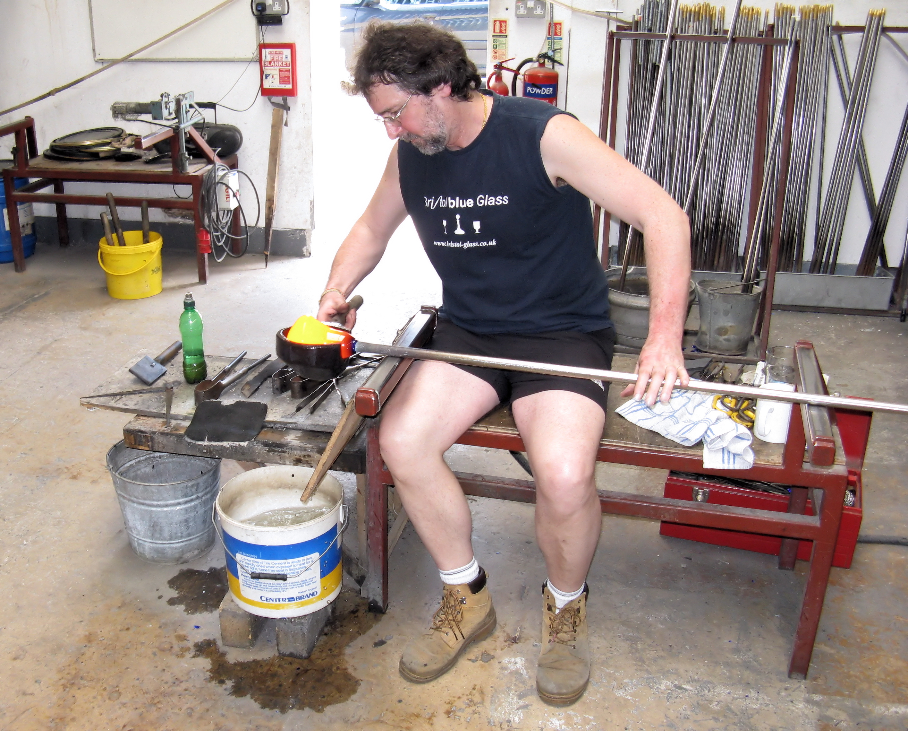
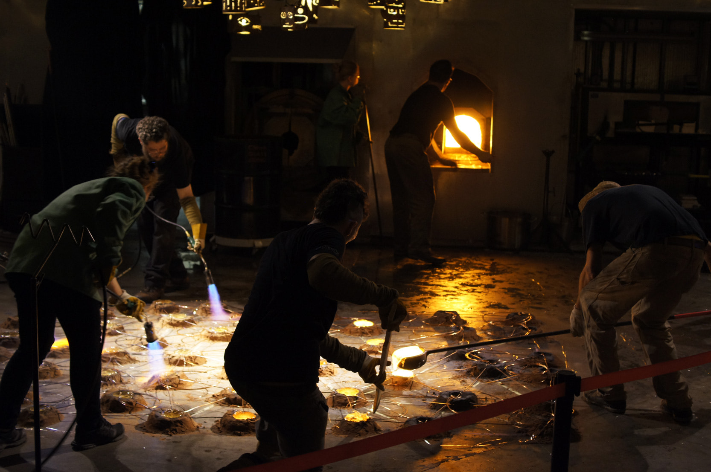
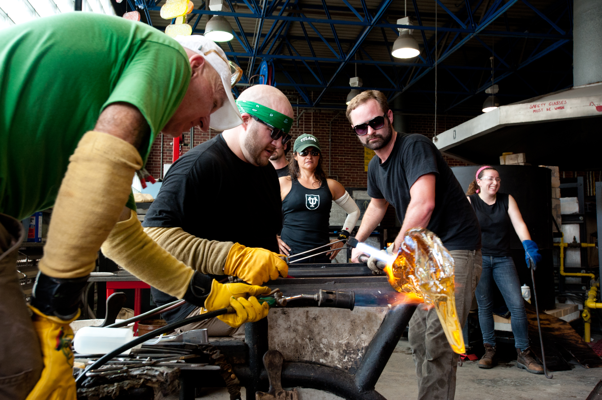
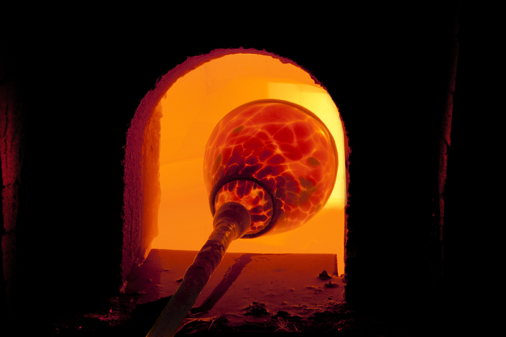
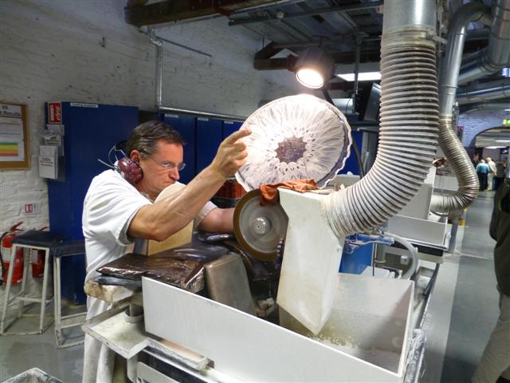
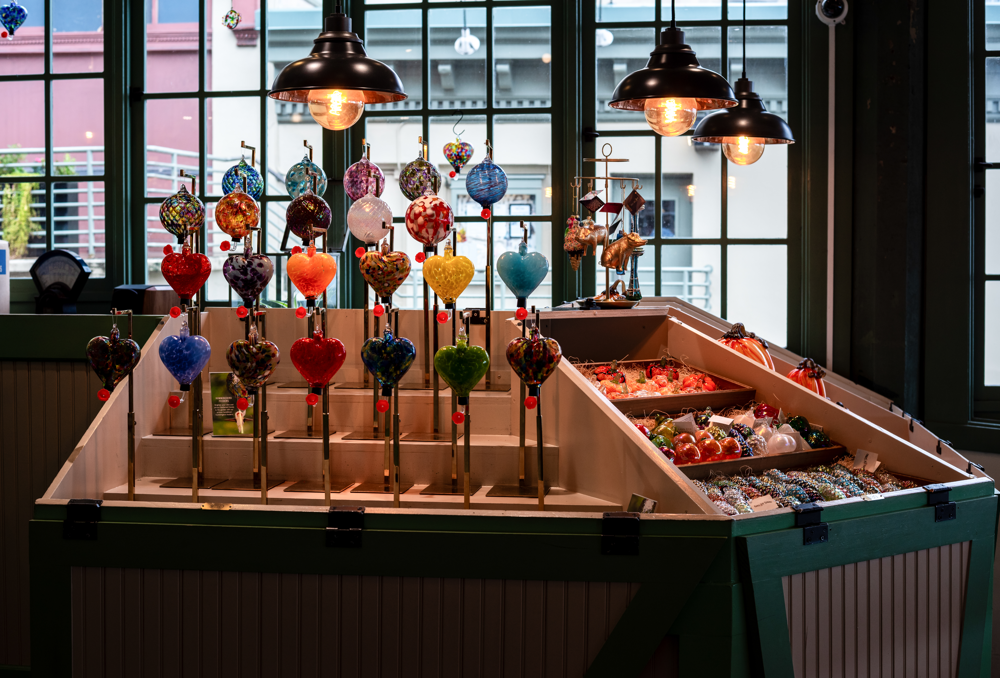

Home / table / ritual objects
Bowls, tumblers, altar vessels, or objects that need to be touched often.

Independent two-person hot shop
Ember & Sand makes small-batch vessels, commissions, and workshop pieces in one bench rhythm: one maker watching the line, the other watching the heat.

Two Makers, One Bench
The gaffer leads color, form, and the final profile. The assistant transfers, reheats, turns the pipe, and manages the seconds when the glass is neither ready nor recoverable.
Both makers finish the work after the heat: cut rims, polished pontils, quiet edges, and surfaces that hold the evidence of the day without showing the struggle.
The Process Rail
Heat gives the studio its first shape, but timing decides what survives. Follow the bench pass from gather to coldwork.
The first gather comes out honey-thick and moving, heavy enough to pull itself out of round if the pipe stops.

Rolled on steel, the gather centers and cools at the skin. The surface tightens while the core still wants to flow.
Breath enters through rotation. The assistant watches the heat while the gaffer watches the bubble and the shoulder.
Blocks, jacks, and gravity refine the profile. Every correction costs heat, and every reheat changes the edge.

The annealer does the slow work no hand can rush, lowering temperature evenly so internal stress can leave the glass.

Coldworking is the quiet second half: cut rims, polished pontils, sandblasted surfaces, optical edges.
Material Evidence

Objects / Small Batch
Work leaves the studio in small batches, seasonal color pulls, collector holds, and commission runs. No two pieces are identical because no two heats are identical.
Pickup is preferred for fragile or oversized work; shipping is discussed once scale and packing are known.
Commissions Begin With Use
Bring the use first. We will ask about scale, color temperature, quantity, deadline, and whether you want to visit the studio while the work is hot.
Bowls, tumblers, altar vessels, or objects that need to be touched often.
Repeatable families with human variation: shades, tablescape runs, room accents.
Small editions and singular pieces where weight, color, and inscription matter.
Workshops / Witness the Heat
You leave with the memory of making it; the object follows after the annealer cools. Sessions are slow enough to see what heat, breath, and rotation actually do.
Closed-toe shoes required. Natural fibers preferred. Safety glasses provided. Pieces are ready after annealing and finishing.
Book a workshopFinal Cooling / Inquiry
Independent hot shop · by appointment · small-batch work released seasonally.